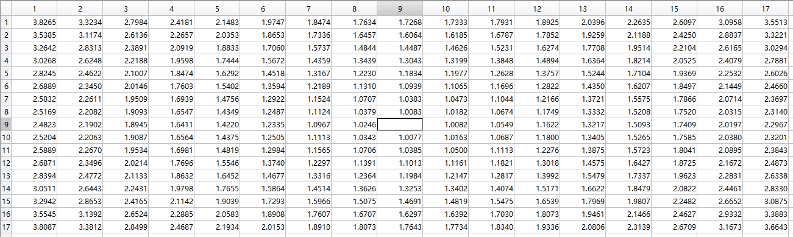
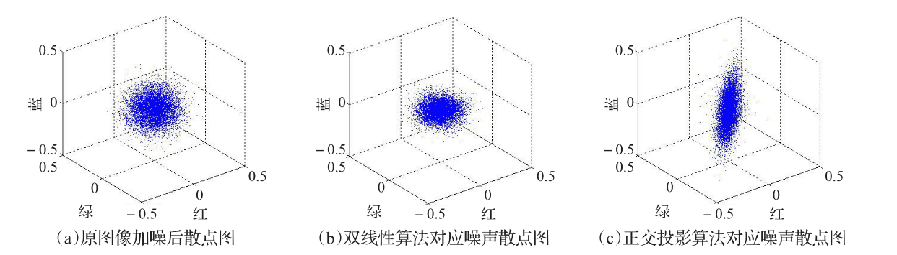
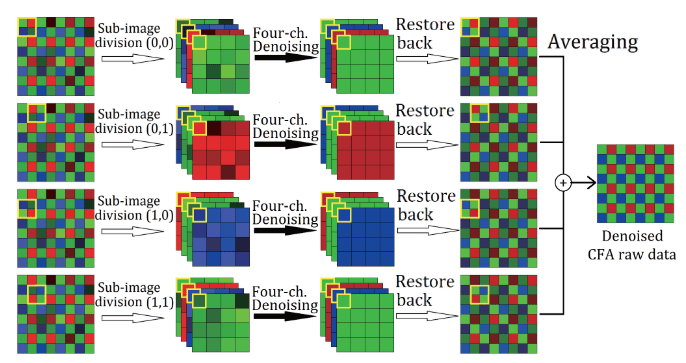
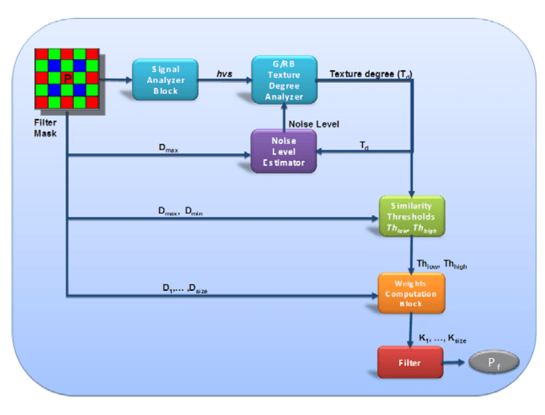
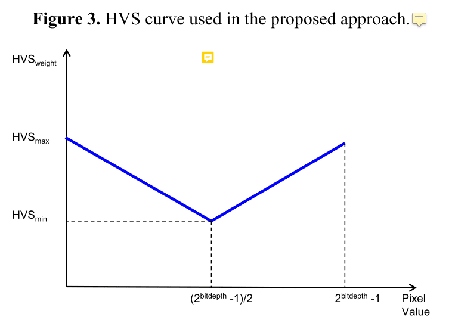
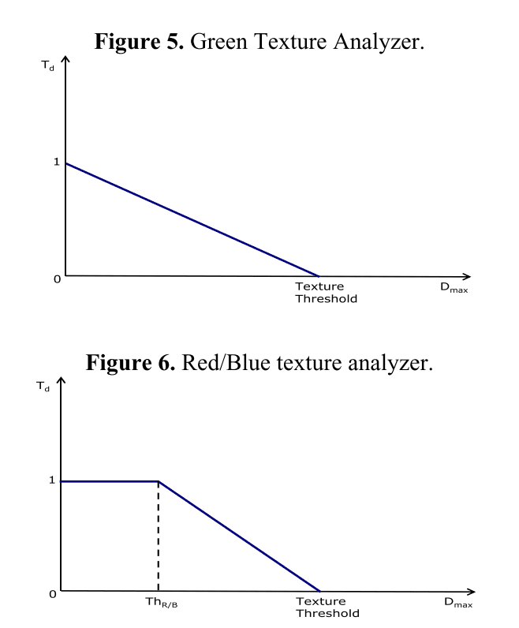
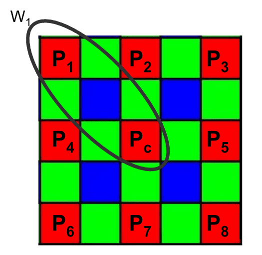
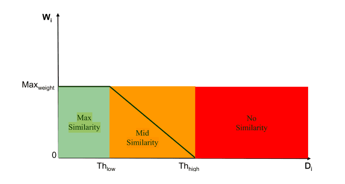

BNR
为什么会有 BNR
RAW 图上的噪声模型通常用高斯 - 泊松模型进行描述，但是在 PIPELINE 中每经过一个处理模块，噪声都会发相应的变化，在经过一些列的线性和非线性变化后噪声模型会变得更加复杂，很难通过模型去降低噪声了。
-
比如 BLC：下图是前面介绍 LSC 时标定得到的补偿 Gain 值，可以发现四周的 gain 值会比中间的大很多，这样就会导致原本均匀分布的噪声在不同的 gain 值作用下变得不均匀，切这种不均匀和镜头相关，噪声模型就会变得复杂。

-
比如 Demosaic：如图去马赛克算法对噪声模型的影响，可以看出不同的去买塞克算法对噪声模型的改变成都和方式都会有所差异，倒是经过去马赛克后噪声模型无法确定。初次之外 pipeline 中还会经过 Gamma，CCM，AWB 等一系列线性和非线性的变换，会使得噪声模型更加复杂，后面再向去除噪声会变得更加困难，所以一种很理想的方式就是直接在 RAW 上就对噪声进行抑制，让噪声在一个合理的范围内。

矫正方法
除了上一篇文中讲到的一些简单滤波的变种方法外，本文主要介绍三种 RAW 域的降噪算法，其中两种基于 PCA 的方式降噪，另一中是基于 HVS 的方式降噪，其中还涉及到的 PCA 的讲解和小波变换去噪的讲解可以通过文末连接去B 站查看视频讲解。
PCA-Based Spatially Adaptive Denoising of CFA Images for Single-Sensor Digital Cameras

PCA 降噪的主要依据就是噪声是均匀分布的，而图像的有用信息主要分布在主成的特征上，所以经过 PCA 降维后图像的主要信息得到了保留，而噪声随着减少的维度损失掉了，那么再经过反 PCA 变换后 SNR 就可以得到提升。
该算法的主要思路就是首先在整副图中选择一个区域，即图中最大的黑框（原文称之为 training block）。PCA 需要有特征，那么需要选择特征框（variable block），即图中小框。如图我们将特征框的尺寸定义为 6*6（这个可以根据情况自行选择效果好的），小框的像素组成一个长度为 36 的列向量。
假设有 255 个框，即一个 255*36 的矩阵，在这 255 个数据中挑选出 N 个数据。这 N 个数据（也就是块）认为是比较相似的，因为不相似区域的贡献度太高在后续的去马赛克算法中会使得图像容易出现伪彩。寻找 N 个数据的方式：作者通过求每个列向量与中心向量（图中绿色框）的曼哈顿距离来排序，选择距离相近的 N 个数据。
经过处理后数据就变为 36*N 维，再对这个二维数据进行 PCA，找出前 m 维个特征进行降维（这个 m 是对 36 个特征进行处理）。然后再对降维后的数据进行反 PCA 变换就可以起到降噪的功效。
除了这些简单的操作，原文中还有一些提升效果的操作，比如主成分的变换矩阵是通过模型求的没有噪声特性的图像的变换矩阵，这样在对图像进行 PCA 变换的时候就可以降低噪声对图像主成分的干扰，然后文中 PCA 之前会通过小波得到噪声模型的方差，用来分析噪声。具体的代码和论文可以参考仓库中原文作者提供原文的配套代码加以理解。
PSEUDO FOUR-CHANNEL IMAGE DENOISING FOR NOISY CFA RAWDATA

这种方法只是用来作为一个思路，因为需要的内存较大，还没验证在实际 PIPELINE 上的效果，所以这里不做过多的阐述，有兴趣的朋友可以参考 B 站相关视频。
主要思路就是将一个选择不同的起始点得四种不同的数据，然后对这四种数据进行 PCA 降噪，然后再次展开成四张 RAW 图，然后对四张 RAW 进行平均得到最终的 raw 图。
Noise Reduction for CFA Image Sensors Exploiting HVS Behaviour
方法主要是结合 HVS 进行 bayer 域的降噪。

该算法主要是通过如图的几个模块进行降噪，通过像素值的差来作为判断依据。下面将通过每个模块的单独讲解来介绍该方法。
-
Signal Analyzer Block
-
噪声在 RAW 上的分布符合高斯泊松分布，噪声的方差随着亮度增加会变大，所以亮度越大降噪力度可以加大。
-
越暗的区域，人眼对于亮度变化的灵敏度就越不敏感，所以对于暗部区域也可以提高降噪力度。
通过以上两个特性，最终将降噪力度和亮度变化的关系定义为以下曲线，将中间亮度值对应的降噪力度设置为最小，然后两侧呈显现增长。

-
-
Texture Degree Analyzer
该模块的主要功能就是通过上一个模块计算的 HVS 权重和下一个模块计算的 noise level 来判断平坦去和纹理区从而实现不同力度的降噪。
\[\text { TextureThreshold }_{c}(k)=HVS_{\text {weight}}(k)+N L_{c}(k-1)\]首先通过以上公式计算出一个 TextureThreshold，用于判断给定的降噪力度。因为 noise level 是下一个模块计算出来的，所以这里利用上一个像素点计算出来的 noise level 来预估当前的 noise level，然后本次计算的 noise level 来预估下次，所以这里是一个循环迭代的过程，所以最开始的像素没有前一个像素的 noise level 的时候会设置一个初始值，这个值的选择就是调试时需要根据效果选择的了。

当计算除了TextureThreshold后，就根据邻域内像素点和中心像素值的差异（及D）来判断是否为平坦区。这里G通道和RB通道分开处理是因为人眼对G分量更为敏感，所以RB通道可以更多的维持在平坦区（即图中Td=1），如此后面就会加大平坦区的降噪力度，而因为人眼不敏感，所以RB通道牺牲更多的细节是在允许范围内的。当像素插值大于上面计算的TextureTheshold就认为的纹理区，那么就将Td设置为0。
-
Noise Level Estimator
该模块用来品谷噪声水平，设计时主要通过以下规则进行：
- 如果被判断为平坦区（Td=1），那么就将 noise level 设置为 Dmax；
- 如果被判断为纹理去（Td=0），那么久将 noise level 保持为上一个像素的 noise level；
- 若果介于平坦区和纹理去之间，那么就通过插值的方式计算出 noise level。
\[\begin{aligned}N L_{R}(k) &=T_{d}(k) * D_{\max }(k)+\left[1-T_{d}(k)\right] * N L_{R}(k-1) \\N L_{G}(k) &=T_{d}(k) * D_{\max }(k)+\left[1-T_{d}(k)\right] * N L_{G}(k-1) \\N L_{B}(k) &=T_{d}(k) * D_{\max }(k)+\left[1-T_{d}(k)\right] * N L_{B}(k-1)\end{aligned}\]式中的\(N L_{R}(k)\)代表当前像素点的 nosie level，\(N L_{R}(k-1)\)代表上一个像素的 noise level，所以对于开始的像素没有上一个同通道的像素，那么就可以设置一个初始值。
-
Similarity Thresholds and Weighting Coefficients computation

该模块主要计算各个点的权重值，如图为红色通道的权求解方式。利用周围像素与中心像素的差值来作为权重的最终判定依据。
\[\left\{\begin{array}{l}T h_{\text {low }}=T h_{\text {high }}=D_{\max } \text { if } \quad T_{d}=1 \\T h_{\text {low }}=D_{\min } \quad \text { if } \quad T_{d}=0 \\T h_{\text {high }}=\frac{D_{\min }+D_{\max }}{2} \quad \text { if } \quad T_{d}=0 \\D_{\min }<T h_{\text {low }}<T h_{\text {high }} \quad \text { if } \quad 0<T_{d}<1 \\\frac{D_{\min }+D_{\max }}{2}<T h_{\text {high }}<D_{\max } \quad \text { if } \quad 0<T_{d}<1\end{array}\right.\]首先通过计算的像素值差异求出一个Thlow和THhigh。

随后通过比较每个点的像素差异和这两个阈值的差异来给定权重。低于最低阈值说明像素差异很想，在滤波时的贡献应该大，需要给一个大的权重，相反差异太大就不应该对滤波提供大的贡献，所以需要将权重设置小，所以通过如上的一个分段线性的方式来给每个像素点分配权重。
\[P_{f}=\frac{1}{N} \sum_{i=1}^{N}\left[W_{i} P_{i}+\left(1-W_{i}\right) P_{c}\right]\]最后通过上述公式完成滤波和归一化即可得到最终降噪后的像素值。
算法实现
因为本文介绍的三种算法前两种都有论文作者提供的源代码作为参考，所以这里就不在重复提供，有兴趣的朋友可以去gitee 仓库下载论文和参考代码即可，这里主要提供第三种算法的代码。
%% --------------------------------
%% author:wtzhu
%% email:wtzhu_13@163.com
%% date: 20211202
%% fuction: Based on paper titled "Noise Reduction for CFA Image Sensors
%% Exploiting HVS Behaviour," by Angelo Bosco, Sebastiano Battiato,
%% Arcangelo Bruna and Rosetta Rizzo
%% --------------------------------
close all;
clear all;
clc;
%% --------------parameters set---------------------------------
neighborhood_size = 5;
initial_noise_level = 30;
hvs_min = 5;
hvs_max = 10;
threshold_red_blue = 12;
BayerFormat = 'RGGB';
%% ----------------preparatory procedure------------------------
% get org image
addpath('../publicFunction');
org_img = imread('images/kodak_fence.tif');
double_img = double(org_img);
[h, w, c] = size(double_img);
figure();
imshow(org_img);
title('org image');
% rgb2raw
rggb_raw = RGB2Raw('../BNR/images/kodak_fence.tif', BayerFormat);
figure();
imshow(rggb_raw,[]);
title('raw');
% add noise to raw
noise_add = 10*randn(h, w);
noise_raw = rggb_raw + noise_add;
noise_raw(noise_raw<0) = 0;
noise_raw(noise_raw>255) = 255;
figure();
imshow(noise_raw,[]);
title('noise raw');
%% -------------Denoise-----------------------------------------
% pad raw
pixel_pad = floor(neighborhood_size / 2);
pad_raw = expandRaw(noise_raw, pixel_pad);
denoised_out = zeros(h, w);
% texture_degree_debug = zeros(h, w);
for i = pixel_pad+1: h+pixel_pad
for j = pixel_pad+1: w+pixel_pad
% center pixel
center_pixel = pad_raw(i, j);
% signal analyzer block
half_max = floor(255 / 2);
if center_pixel <= half_max
hvs_weight = -(((hvs_max - hvs_min) * double(center_pixel)) / half_max) + hvs_max;
else
hvs_weight = (((center_pixel - 255) * (hvs_max - hvs_min)) / (255 - half_max)) + hvs_max;
end
% noise level estimator previous value
if j < (2*pixel_pad + 1)
noise_level_previous_red = initial_noise_level;
noise_level_previous_blue = initial_noise_level;
noise_level_previous_green = initial_noise_level;
else
noise_level_previous_green = noise_level_current_green;
if mod(i, 2) ~= 0 % red
noise_level_previous_red = noise_level_current_red;
elseif mod(i, 2) == 0 % blue
noise_level_previous_blue = noise_level_current_blue;
end
end
% Processings depending on Green or Red/Blue
neighborhood = [pad_raw(i - 2, j - 2), pad_raw(i - 2, j), pad_raw(i - 2, j + 2), ...
pad_raw(i, j - 2), pad_raw(i, j + 2), ...
pad_raw(i + 2, j - 2), pad_raw(i + 2, j), pad_raw(i + 2, j + 2)];
d = abs(neighborhood - center_pixel);
d_max = max(d);
d_min = min(d);
% Red channel
if mod(i, 2) == 1 && mod(j, 2) == 1
% calculate texture_threshold
texture_threshold = hvs_weight + noise_level_previous_red;
% texture degree analyzer
if (d_max <= threshold_red_blue)
texture_degree = 1;
elseif ((d_max > threshold_red_blue) && (d_max <= texture_threshold))
texture_degree = -((d_max - threshold_red_blue) / (texture_threshold - threshold_red_blue)) + 1;
elseif (d_max > texture_threshold)
texture_degree = 0;
end
% noise level estimator update
noise_level_current_red = texture_degree * d_max + (1 - texture_degree) * noise_level_previous_red;
% Blue channel
elseif mod(i, 2) == 0 && mod(j, 2) == 0
texture_threshold = hvs_weight + noise_level_previous_blue;
% texture degree analyzer
if (d_max <= threshold_red_blue)
texture_degree = 1;
elseif ((d_max > threshold_red_blue) && (d_max <= texture_threshold))
texture_degree = -((d_max - threshold_red_blue) / (texture_threshold - threshold_red_blue)) + 1;
elseif (d_max > texture_threshold)
texture_degree = 0;
end
% noise level estimator update
noise_level_current_blue = texture_degree * d_max + (1 - texture_degree) * noise_level_previous_blue;
% Green channel
else
texture_threshold = hvs_weight + noise_level_previous_green;
% texture degree analyzer
if (d_max == 0)
texture_degree = 1;
elseif ((d_max > 0) && (d_max <= texture_threshold))
texture_degree = -(d_max / texture_threshold) + 1;
elseif (d_max > texture_threshold)
texture_degree = 0;
end
% noise level estimator update
noise_level_current_green = texture_degree * d_max + (1 - texture_degree) * noise_level_previous_green;
end
% similarity threshold calculation
if (texture_degree == 1)
threshold_low = d_max;
threshold_high = d_max;
elseif (texture_degree == 0)
threshold_low = d_min;
threshold_high = (d_max + d_min) / 2;
elseif ((texture_degree > 0) && (texture_degree < 1))
threshold_high = (d_max + ((d_max + d_min) / 2)) / 2;
threshold_low = (d_min + threshold_high) / 2;
end
% weight computation
size_d = size(d);
length_d = size_d(2);
weight = zeros(size(d));
pf = 0;
for w_i = 1: length_d
if (d(w_i) <= threshold_low)
weight(w_i) = 1;
elseif (d(w_i) > threshold_high)
weight(w_i) = 0;
elseif ((d(w_i) > threshold_low) && (d(w_i) < threshold_high))
weight(w_i) = 1 + ((d(w_i) - threshold_low) / (threshold_low - threshold_high));
end
pf = pf + weight(w_i) * neighborhood(w_i)+ (1 - weight(w_i)) * center_pixel;
end
denoised_out(i - pixel_pad, j - pixel_pad) = pf / length_d;
end
end
figure();imshow(uint8(denoised_out),[]);title('denoise');
figure();imshow((noise_raw-rggb_raw), []);title('noise');
figure();imshow((denoised_out-rggb_raw), []);title('noise reduced');
相关链接
本专栏所有的博客笔记和视频都可以从以下渠道获取：
- zhihu： ISP 图像处理 - 知乎 (zhihu.com)
- CSDN：ISP 图像处理_wtzhu_13 的博客-CSDN 博客
- Bilibili：食鱼者的个人空间哔哩哔哩Bilibili
- Gitee：ISPAlgorithmStudy: ISP 算法学习汇总，主要是论文总结 (gitee.com)